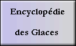
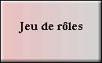
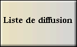
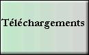
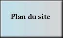
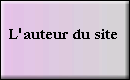

Bienvenue sur le site non officiel de
Le monde des Glaces est issu de l'imagination de Georges-Jean Arnaud, qui, au fil des romans, décrit complèment une Terre recouverte de Glaces et sur laquelle les hommes durent développer des réseaux ferroviaires pour survivre.
Site mis à jour le 21 avril 2004 (46 ans avant l'explosion de la Lune)
| Choisissez votre destination | Vous êtes le ° visiteur | |||
|  |  |  | Ce site fait partie de : |
|
|  |  |  | ||